Made for hills
WindNext modular turbines are fixed in place and assembled on-site from relatively small components. This enables simple transportation and assembly on hill installations.
Coming in 2027
Unlocking the untapped wind energy reserve. Modular turbines built on-site from small components, with a 60-year lifespan, fully recyclable design, certified safe for birds, and zero infrasound.
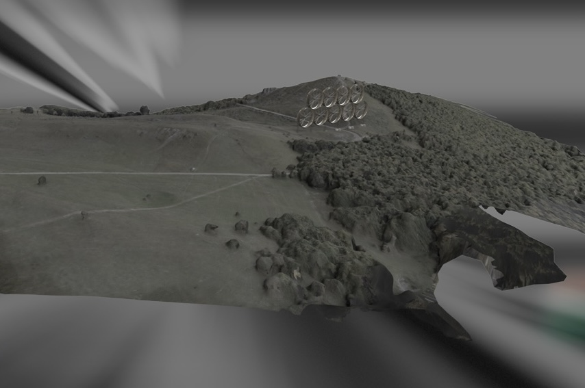
WindNext turbines are currently undergoing final certification. Our first projects start in 2027.
Six things legacy wind technology can't claim.
WindNext modular turbines are fixed in place and assembled on-site from relatively small components. This enables simple transportation and assembly on hill installations.
95% of the WindNext turbine module is made of only 4 different parts — hoop modules, crossbar holders, shroud envelope parts and blades.
Long-lasting materials and durability-focused design make WindNext turbines last up to 60 years — three times the life span of legacy technology.
All parts except the generator and electric equipment are made out of galvanised steel and aircraft-grade aluminium. Unlike legacy technology, WindNext blades are fully recyclable.
WindNext turbines are designed to withstand extreme winds over 300 km/h — especially important with climate change driving severe weather.
WindNext turbines are certified safe for birds and produce no infrasound.
WindNext technology
It is often hard to place wind farms in existing landscapes, as locations with good wind conditions are rare. Local populations are often against new wind farms due to infrasound and the deadly effect on local bird populations. And the turbines themselves are not very green — they last only 20 years, and the giant fiberglass blades are almost impossible to recycle.
With increased focus on renewable energy sources, investment in wind power and installed capacity is growing steadily. To maximise efficiency, wind turbines keep growing. That makes them ever harder to install, limiting the number of potential locations.
Traditional rotor blades are made of extremely difficult-to-recycle fiberglass and are usually discarded as waste at landfills or incinerated. The current approach is suitable only for flat areas with a lot of space for installation. With most of that space in use by human dwellings or agriculture, we are nearing capacity for traditional wind farms — despite billions of euros in funds earmarked for expansion of wind power in the future.
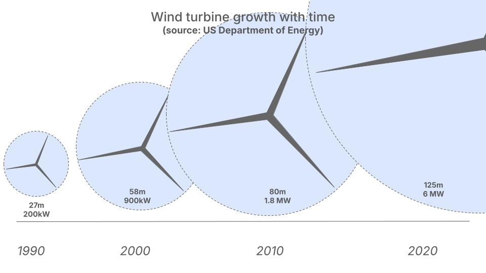
WindNext modules are designed for ease of manufacture, with over 95% of the module — everything except the electrical subsystem — comprising only four essential parts (hoop modules, crossbar holders, shroud envelope parts and blades).
Dimensions of basic elements have been optimised for size, with the biggest segment measuring 1.5 m wide, 11.3 m long, 2.2 m high and weighing 2.3 tonnes.
The modular design significantly lowers the costs of transportation, soil work, installation, documentation and operation. As there is less material, smaller trucks and cranes can be used. The module also requires smaller foundations, leading to faster processing of planning permission.
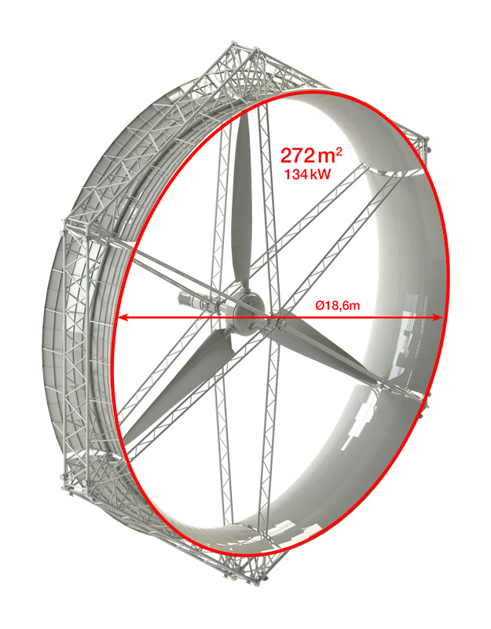
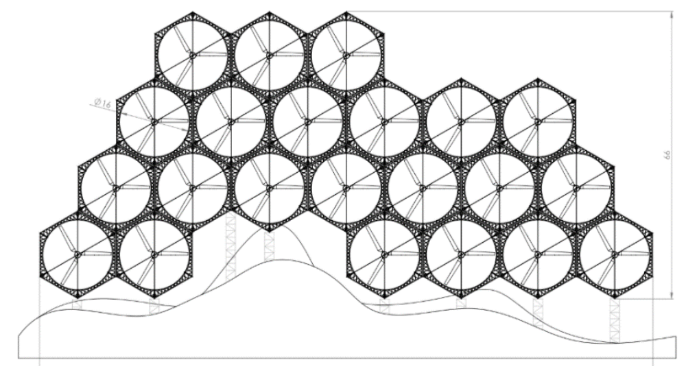
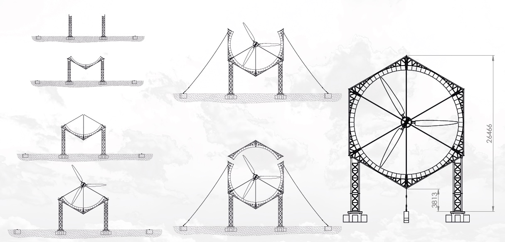
WindNext modules combine three different effects to maximize the yield of the module:
Due to its design, the WindNext module is built to last up to 60 years with scheduled maintenance.
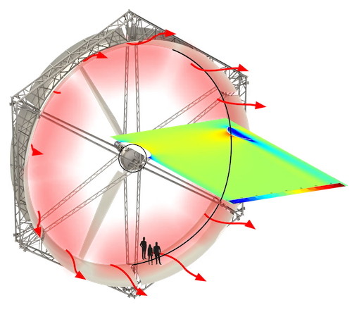
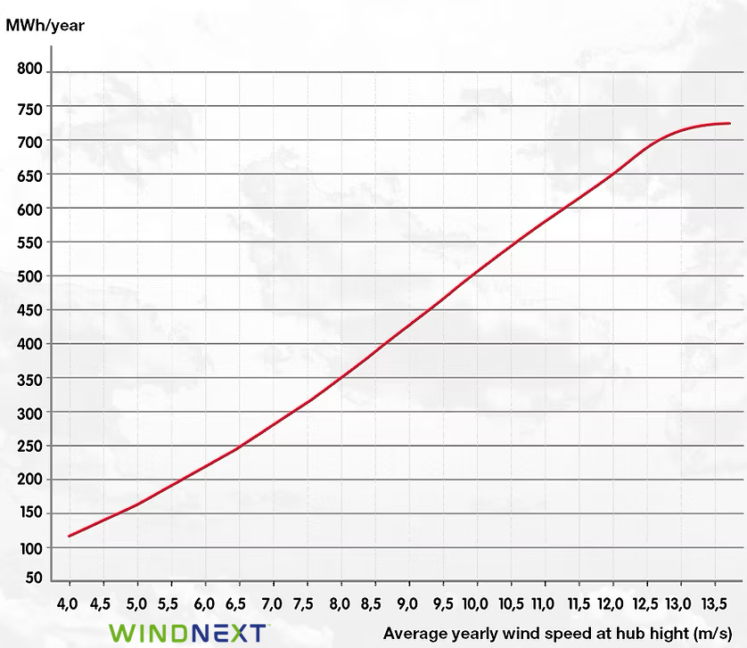
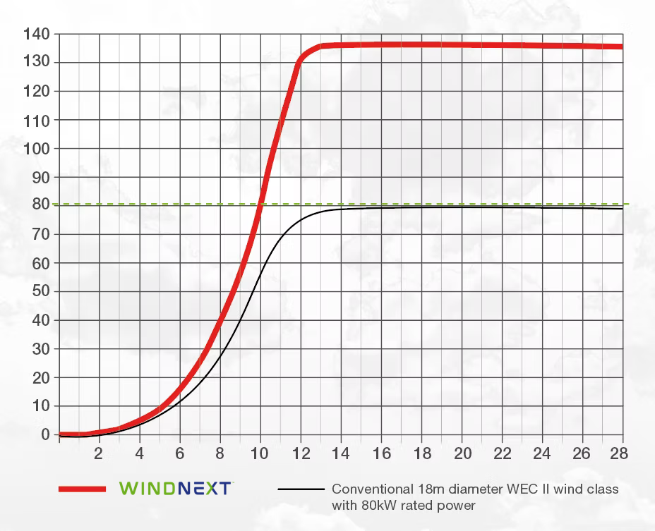
WindNext modules enable expanding the use of existing wind farms by installing additional modules at the base of the wind farm and using the lower wind area.
One of WindNext's first pilot projects is in fact an expansion of an existing wind farm.
Everything except the electrical subsystem on WindNext modules is manufactured out of durable aluminium and galvanised steel. That means the WindNext module is fully recyclable after the end of the service period — unlike traditional fiberglass blades.
Optimized for hills
Hills have the best onshore wind potential to meet growing demand for wind power, but there are also challenges: often, there is no space for installation, and transportation of large turbine parts is either expensive or simply impossible.
With demand for wind power growing and legacy wind power technology reaching the limits of deployment potential, the time is ripe for a new technology that will enable future growth. WindNext modular wind turbines, designed for hill placement, are the solution.
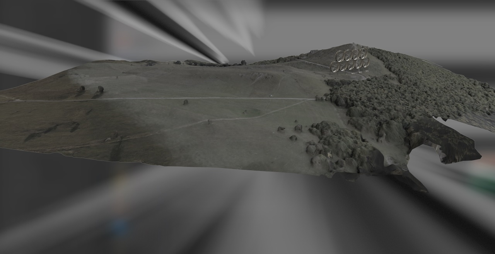
Showcase · Madrid region
Spain has limited potential for wind energy expansion using legacy technology due to terrain configuration. We performed an in-depth analysis of the Madrid region to demonstrate this. Regions marked in black are areas with wind potential using legacy technology; regions marked in red represent additional locations unlocked by WindNext.
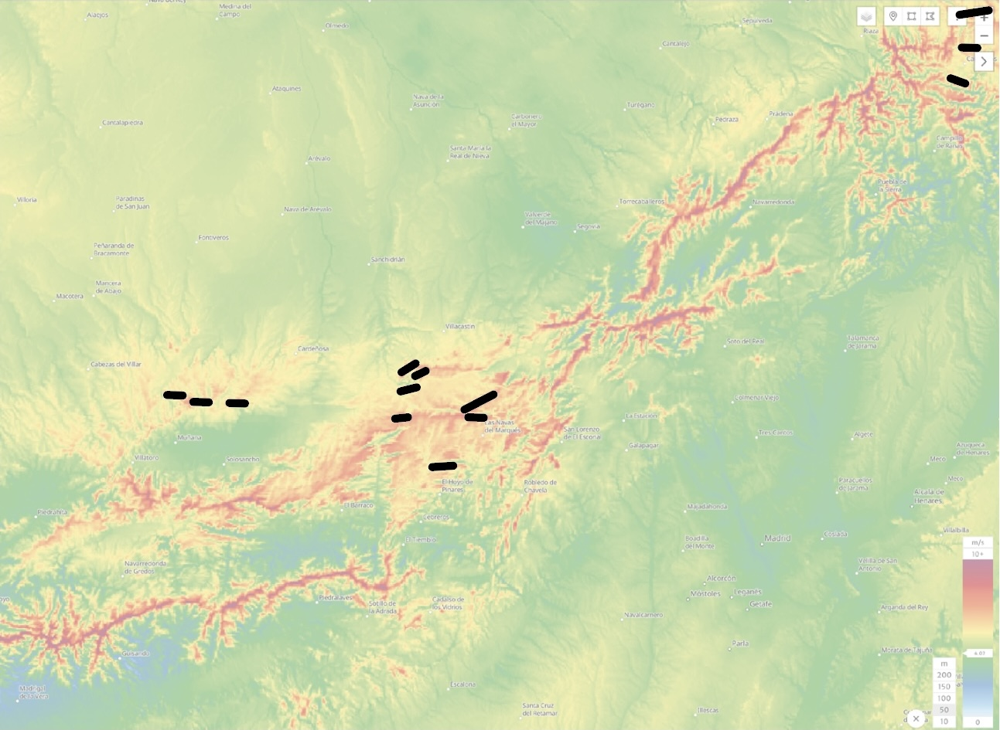
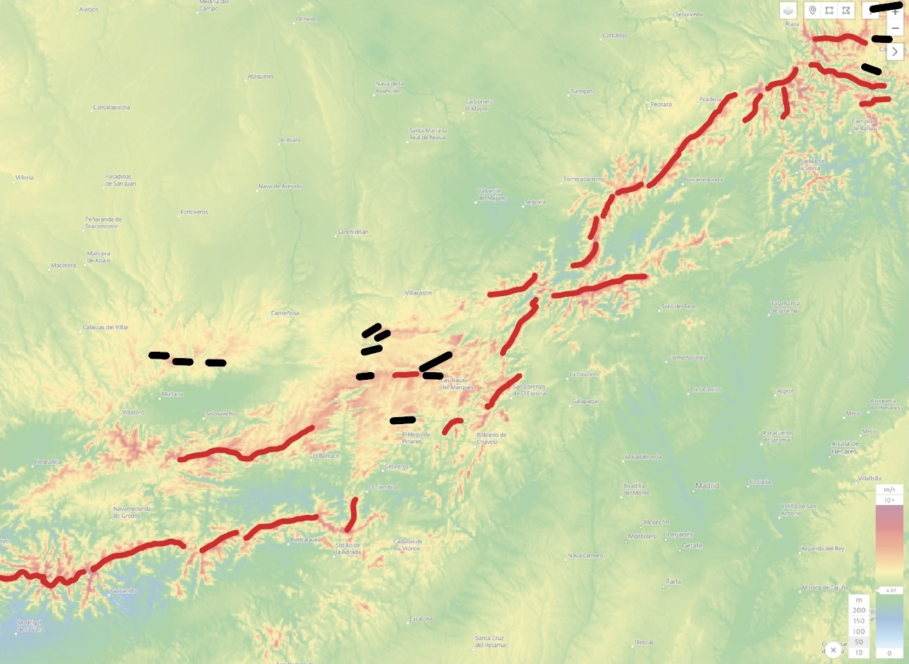
Legacy enables 30,000 MW; WindNext unlocks an additional 60,000 MW.
Legacy onshore potential is 220,000 MW; WindNext unlocks 300,000 MW more.
Safe for birds
The problem of bird and bat fatalities due to wind turbines has been well documented. Often, it forms the basis for local community opposition to installation of new wind turbine farms. The need for a wildlife-safe solution is particularly prevalent in areas of the world where there is huge wind power potential but limited area to develop wind farms due to wildlife conservation concerns.
Innovations designed to deflect bats and birds and reduce risk — ultrasonic boom boxes, blades painted dark, radar detection of flocks that cause turbine shutdowns — have been tried. The key cause of bird fatalities is the essential invisibility of the traditional turbine. The lack of shroud and the rotation of the turbine with the winds mean there is no constant obstacle that birds could get used to and navigate around.
WindNext turbines are fixed in place and have an obvious shroud. This constant obstacle enables simple detection by birds and bats, greatly reducing harm to wildlife.
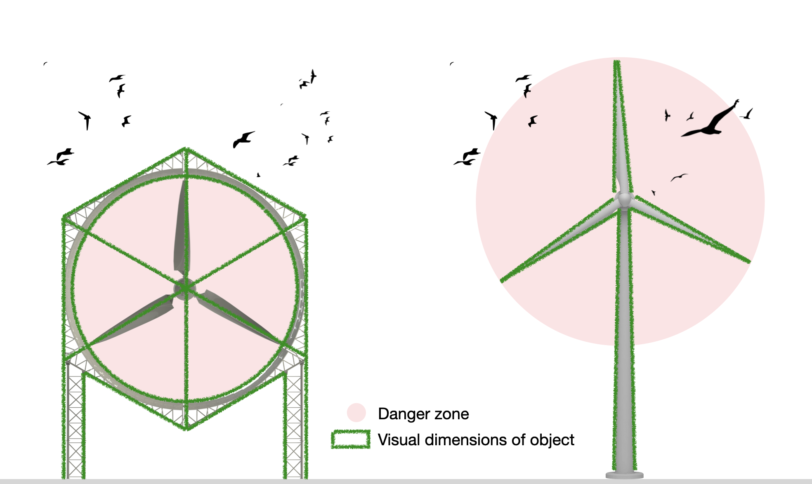
We believe that the WindNext modular turbine design lowers the risk of collisions with birds, as the frame represents a visual barrier enabling the larger birds to see the obstacles.
Zero infrasound
Infrasound is sound with very long wavelengths, a planar wave structure, and outside the range of normal hearing for moderate sound pressure levels. Its attenuation is complex: it initially increases with distance from the source, but it can decrease over still-further distances so that it then gets louder. When it interacts with buildings, it can produce secondary structural vibrations that may be perceptible to the occupants.
Infrasound from wind turbines is particularly annoying because the sound signature contains short, frequent episodes and persists over extended periods, compared with other short-duration sources such as trains. Most people can tune out repeated sounds, but in some people the central nervous system becomes sensitized and they suffer the symptoms of chronic noise stress — anxiety, depression, cognitive dysfunction and disrupted sleep.
The main cause of infrasound waves is the high-velocity blades spinning beside the large-diameter tower. This produces strong air compression and decompression waves, resulting in infrasound.
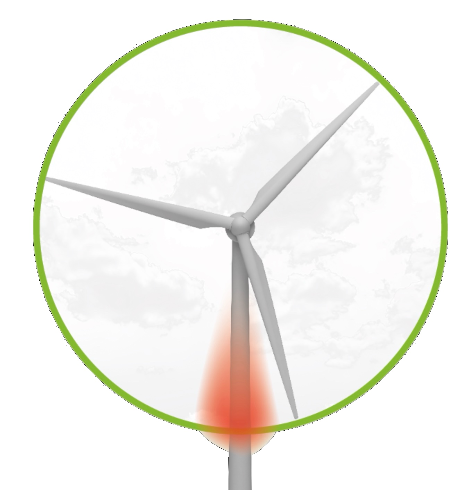
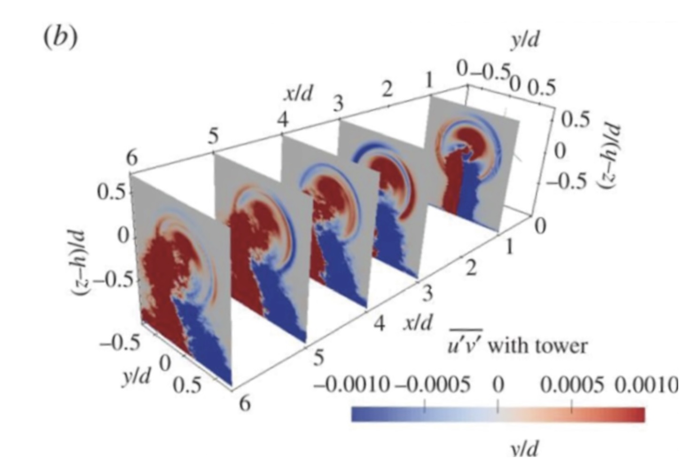
WindNext uses a frame design instead of a tower design, which eliminates the main cause of the infrasound. The rotor spins at speeds between 12 RPM and 60 RPM, which makes it impossible for the rotor to create sound frequencies lower than 20 Hz. These design features combine to eliminate harmful infrasound.
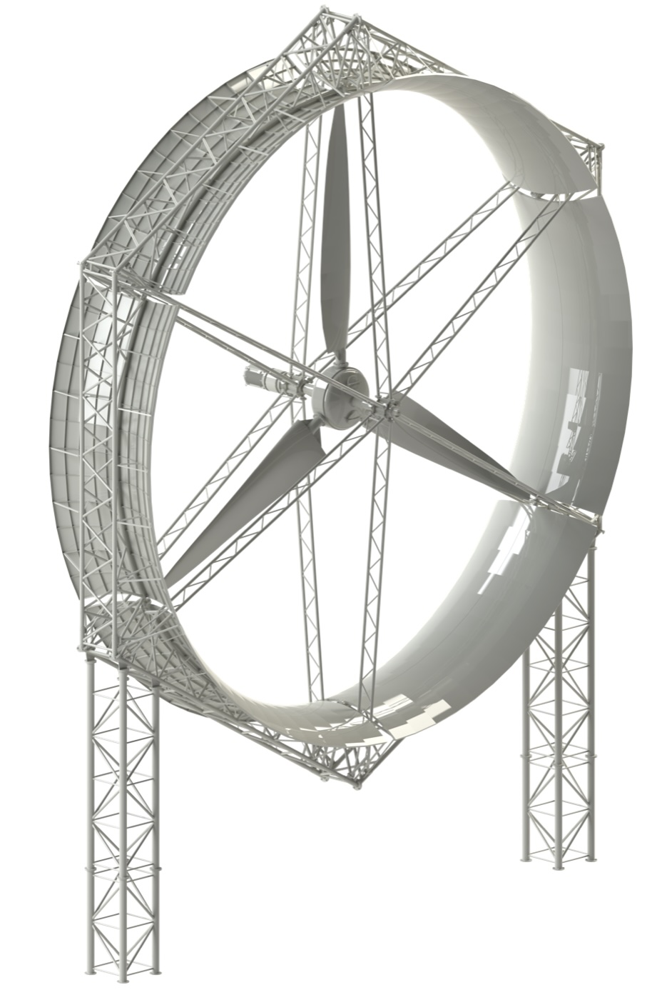
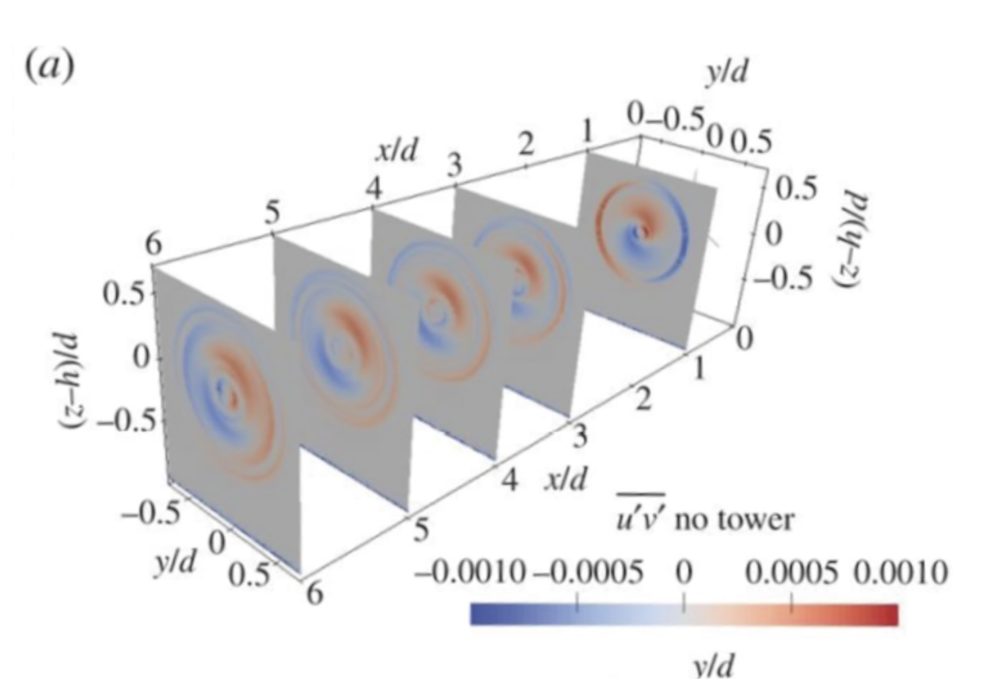
WindNext turbines are currently undergoing final certification. Our first projects start in 2027 — talk to us about piloting WindNext at your site.
Get in touch